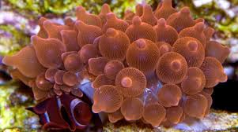

Anemone Care
Anemone Care
Anemones are captivating and often become the centerpiece of reef aquariums. Known for their flowing tentacles and their symbiotic relationship with clownfish, anemones require stable water conditions and are generally recommended for intermediate to advanced hobbyists.

Location
Anemones are found throughout tropical oceans, especially within the Indo-Pacific region. They attach themselves to rock structures and may move around the aquarium if they are unhappy with lighting or water flow.
Lighting
Most anemones are photosynthetic and require moderate to high lighting. LED, T5, and metal halide lighting systems all work well when appropriate PAR levels are maintained.
- Low Light: Not Recommended
- Medium Light: 100–150 PAR
- High Light: 150–250 PAR
Water Flow
Moderate to strong water movement is ideal. Water should move around the anemone without blasting it directly. Excessive direct flow may cause an anemone to detach and search for a new location.
Feeding
Although photosynthetic, anemones benefit from occasional feedings of mysis shrimp, silversides, krill, or other marine foods once or twice each week.

Propagation
Some species, such as Bubble Tip Anemones, reproduce naturally by splitting. Experienced hobbyists may also manually divide healthy specimens, although care must be taken to avoid injury.
A Word of Caution
Anemones possess powerful stinging cells and may damage nearby corals if they move through the aquarium. Cover powerheads and provide adequate space before adding one to your reef tank.
Acclimation
Drip acclimate new anemones for approximately 30–45 minutes before placing them into the aquarium. Stable salinity, pH, and temperature are essential for long-term success.